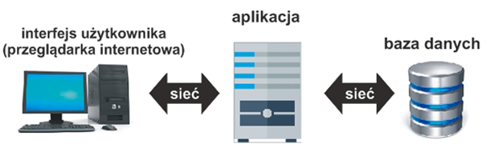

Aplikacja internetowa to program, który pracuje na serwerze i komunikuje się z użytkownikiem poprzez sieć komputerową z wykorzystaniem przeglądarki internetowej. Przeglądarka internetowa w takim przypadku pełni funkcję interfejsu użytkownika. W aplikacji internetowej zakłada się interakcję z użytkownikiem, korzystanie z baz danych i innych usług, często rozproszonych, umieszczonych na wielu różnych serwerach. Istotnymi cechami aplikacji internetowej są łatwość i szybkość dotarcia do informacji (dowolny komputer podłączony do internetu lub sieci LAN i przeglądarka stron internetowych) oraz bezpieczeństwo danych (login i hasło, szyfrowanie połączenia oraz system uprawnień).
Do prawidłowej pracy aplikacji internetowej potrzebne jest:
Z serwerem WWW komunikuje się przeglądarka internetowa, a serwer bazodanowy i interpreter umożliwiają udostępnianie dynamicznie tworzonych stron internetowych oraz zarządzanie bazami danych.
Narzędzia stosowane podczas pracy z aplikacją internetową można podzielić na dwie grupy:
Technologie działające po stronie klienta są związane z rodzajem oprogramowania klienckiego, czyli przeglądarki internetowej i zainstalowanych wtyczek. Najczęściej wspomagają one technologie działające po stronie serwera. Podstawową technologią stosowaną po stronie klienta jest JavaScript. Jest to język skryptowy, którego kod można wstawić w kod strony HTML w celu uzyskania dynamiki strony. JavaScript jest obecnie wspierany przez wszystkie przeglądarki i nie wymaga instalowania dodatkowego oprogramowania.
Inną technologią, która może być stosowana po stronie klienta, są aplety Java. Aplety te pisane są w języku Java, a do ich wykonania potrzebne jest zainstalowanie w przeglądarce wtyczki Java Virtual Machine. Aplety Java są coraz rzadziej stosowane ze względu na zajmowanie zbyt wielu zasobów komputera i rozwój innych technologii.
Technologia Flash to kolejne narzędzie, które może być stosowane po stronie klienta. Dostarcza ono narzędzi do tworzenia animacji i efektów graficznych. Technologia Flash wymaga instalowania w przeglądarce specjalnej wtyczki Adobe Flash Player.
AJAX (ang. Asynchronous JavaScript and XML) to technologia uzupełniająca język JavaScript. Oferuje ona te same działania po stronie klienta co JavaScript. Ale w technologii AJAX komunikacja z serwerem jest realizowana w tle, podczas gdy użytkownik pracuje na stronie WWW.
Technologie działające po stronie serwera powodują, że klient otrzymuje gotową stronę internetową wygenerowaną z uwzględnieniem kryteriów określonych przez użytkownika.
Pierwszą technologią, która zyskała popularność i jest stosowana nadal w niektórych aplikacjach, była technologia CGI (ang. Common Gateway Interface). Umożliwiała ona między innymi dynamiczne generowanie dokumentów przed wysłaniem ich do przeglądarki, tworzenie dokumentów w oparciu o dane znajdujące się w bazie, generowanie i przetwarzanie formularzy. Skrypty CGI mogą być programami kompilowanymi do postaci binarnej lub programami interpretowanymi, pisanymi np. w Perlu lub w języku skryptowym powłoki.
Filtry ISAPI (ang. Internet Server API), których działanie jest sterowane zdarzeniami serwera, a nie żądaniami klienta. Zaletą tej technologii jest szybkość działania oraz większa wydajność w porównaniu z technologią CGI. Jej wadą jest działanie tylko w systemach Windows. Obecnie popularne stały się technologie, które generują strony WWW poprzez interpretowanie kodu osadzonego wewnątrz strony.
Jest to bardzo wydajna i nowoczesna technologia opracowana przez firmę Microsoft. Przeznaczona została do tworzenia różnych aplikacji internetowych w formatach HTML, WML oraz XML. Tworzone dokumenty zawierają statyczną treść, ale w ramach kodu statycznego istnieje możliwość dodania kodu dynamicznego.
JavaServer Pages — wraz z innymi elementami wchodzącymi w skład platformy Java Platform firmy Sun umożliwia tworzenie dynamicznych dokumentów WWW w formatach HTML, XHTML, DHTML oraz XML z wykorzystaniem języka Java. Jest to rozwiązanie podobne do technologii PHP.
Wraz z serwerem WWW Apache oraz serwerem baz danych MySQL tworzy wydajną i niezależną od systemu platformę do budowania dynamicznych stron WWW. Platforma ta określana jest jako platforma AMP. W systemach Linux znana jest pod nazwą LAMP, a w systemie Windows pod nazwą WAMP. Istnieje również wieloplatformowa wersja, nazywana XAMPP. PHP jest systemem otwartym, dzięki czemu powstają coraz nowsze moduły rozszerzające jego możliwości. PHP jest nie tylko technologią funkcjonującą po stronie serwera. Jest to również język skryptowy, wykorzystywany przy pracy nad aplikacjami uruchamianymi niezależnie od serwera WWW.
Podstawowa architektura aplikacji internetowej zakłada, że na komputerze użytkownika funkcjonuje wyłącznie oprogramowanie obsługi interfejsu użytkownika, natomiast oprogramowanie właściwej aplikacji oraz oprogramowanie dostępu do danych znajdują się na oddzielnych, dedykowanych komputerach. Takie rozwiązanie pozwala na współbieżny dostęp do danych i aplikacji oraz obniża wymagania dla komputera użytkownika.
Rozszerzona architektura aplikacji internetowej zakłada, że w jej skład wchodzą trzy programowe warstwy funkcjonalne:
Istotnym elementem tej architektury jest serwer aplikacji. Odpowiada on za obsługę komunikacji z warstwą klienta i warstwą danych. Programista, który tworzy aplikacje internetowe, nie musi tworzyć kodu obsługi protokołu HTTP z klientem ani kodu obsługi komunikacji SQL z serwerem bazy danych. Ponadto serwer aplikacji realizuje inne typowe funkcje, np. obsługę transakcji, rejestrację żądań w plikach dziennika, autoryzację dostępu użytkowników do aplikacji.
Aplikacje internetowe najczęściej buduje się w ten sposób, że poszczególne funkcje systemowe w celu ich separacji są rozdzielone pomiędzy różne komponenty. Stosowane są dwie metody:
Nazywa się tak, ponieważ definiuje cztery warstwy aplikacji internetowej. Są to warstwy:
Składniki aplikacji są podzielone na dwie grupy: składniki logiki prezentacji i składniki logiki biznesowej.
Zadania składników logiki prezentacji to:
Zadania składników logiki biznesowej to:
Jest dalszym rozwinięciem architektury 4-warstwowej. Składniki aplikacji internetowej są podzielone na trzy grupy:
Zaletą technologii aplikacji internetowych jest to, że użytkownik korzystający z takiej aplikacji może posługiwać się tylko programem klienta HTTP, który zwykle ma małe wymagania sprzętowe. Dzięki temu dostęp do aplikacji internetowych możliwy jest też za pomocą tabletu czy telefonu komórkowego. Inną zaletą jest wygoda administrowania aplikacjami internetowymi. Są one umieszczane na pojedynczym komputerze (serwerze aplikacji), w związku z tym prace administracyjne dotyczą tylko tego komputera.
Wadą technologii aplikacji internetowych są koszty, jakie należy ponieść, aby wdrożyć ten system (np. konieczność zakupu serwera o dużej mocy obliczeniowej czy zakupu komercyjnego oprogramowania serwera aplikacji). Inną niedogodnością są trudności z wytwarzaniem oprogramowania. Serwerami aplikacji są np.: poss Application Server (serwer aplikacji w Javie na licencji LGPL), IBM WebSphere (serwer aplikacji JEE oferowany przez firmę IBM), platforma .NET Microsoft.